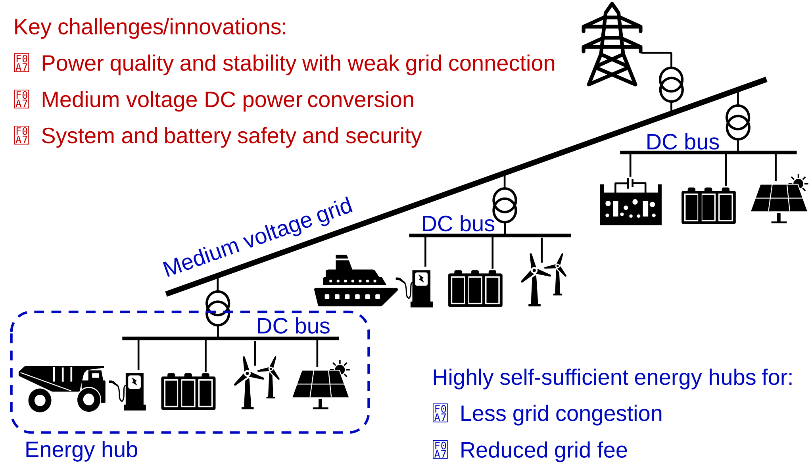

Industrial Partners



Energy hubs are highly self-sufficient, therefore their capacity can be much larger than the grid connection, making it a weak grid connection. This can lead to severe power quality and stability issues. We research on modelling, analyzing, and mitgating these issues. Below, we present some key findings from our research:
• D Wu, GS Seo, L Xu, C Su, Ł Kocewiak, Y Sun, Z Qin, Grid integration of offshore wind power: standards, control, power quality and transmission, IEEE Open Journal of Power Electronics 5, 583-604, 2024
• J Xiao, L Wang, P Bauer, Z Qin, Virtual Impedance Control for Load Sharing and Bus Voltage Quality Improvement in Low Voltage AC Microgrid, IEEE Transactions on Smart Grid 15(3), 2447-2458, 2024
• Y Wu, J Xu, TB Soeiro, P Bauer, Z Qin, Frequency Design of Three-phase Active Front-End Converter with Reduced Filter in EV Chargers, IEEE Transactions on Transportation Electrification 10(4), 10083-10101, 2024
• L Wang, J Xiao, P Bauer, Z Qin, Analytic Design of an EV Charger Controller for Weak Grid Connection, IEEE Transactions on Industrial Electronics 71(12), 15268-15279, 2024
• Z Qin, T B Soeiro, J Dong, et al, Electric vehicle charging technology and its control, Control of Power Electronic Converters and Systems: Volume 4, 241-307, Academic Press, 2024
• L Wang, Z Qin, P Bauer, A gradient-descent optimization assisted gray-box impedance modeling of ev chargers, IEEE Transactions on Power Electronics 38 (7), 8866-8879, 2023
• LB Larumbe, Z Qin, P Bauer, Guidelines for stability analysis of the DDSRF-PLL using LTI and LTP modelling in the presence of imbalance, IEEE Open Journal of the Industrial Electronics Society 3, 339-352, 2022
• LB Larumbe, Z Qin, L Wang, P Bauer, Impedance modeling for three-phase inverters with double synchronous reference frame current controller in the presence of imbalance, IEEE Transactions on Power Electronics 37 (2), 1461-1475, 2022
• [Paper Award] L Wang, Z Qin, T Slangen, P Bauer, T Van Wijk, Grid Impact of Electric Vehicle Fast Charging Stations: Trends, Standards, Issues and Mitigation Measures-An Overview, IEEE Open Journal of Power Electronics 2, 56-74, 2021
• J Lei, Z Qin, W Li, P Bauer, X He, Stability Region Exploring of Shunt Active Power Filters Based on Output Admittance Modeling, IEEE TRANSACTIONS ON INDUSTRIAL ELECTRONICS 68 (12), 11696-11706, 2021
• L Wang, Z Qin, LB Larumbe, P Bauer, Python supervised co-simulation for a day-long harmonic evaluation of EV charging, Chinese Journal of Electrical Engineering 7 (4), 15-24, 2021
• D Vree, LB Larumbe, Z Qin, P Bauer, BC Ummels, Impact of WTG converter impedance model on harmonic amplification factor of the Dutch 110kV transmission network using a 383MW wind farm case study, Cigre 2020 E-session, 2020
Energy hubs are connected to the grid via a traditional transformer. Meanwhile, it is beneficial to make a DC bus for the energy hub to reduce the power conversion stage and thereby the power loss, cost and control complexity. It is an appealing solution to implement this with power electronics and medium- rather than line-frequency based power conversion, so called Solid State Transformer (SST) or DC transformer. It enhances the flexibility and controllability, and reduces the footprint of the power conversion. Our research results including the power conversion, partially discharge and insulator design are shown below:
• Z Li, L Wang, R Liu, R Mirzadarani, T Luo, D Lyu, MG Niasar, Z Qin, A Data-Driven Model for Power Loss Estimation of Magnetic Materials Based on Multi-Objective Optimization and Transfer Learning, IEEE Open Journal of Power Electronics 5, 605 - 617, 2024
• Z Li, R Mirzadarani, MG Niasar, M Itraj, L van Lieshout, P Bauer, Z Qin, Medium-Voltage Solid-State Transformer Design for Large-Scale H2 Electrolyzers, IEEE Open Journal of Power Electronics 5, 936 - 955, 2024
• S Yadav, P Bauer, Z Qin, Simplified Operation and Control of a Series Resonant Balancing Converter for Bipolar DC Grids, IEEE Journal of Emerging and Selected Topics in Power Electronics 12(4), 4015-4024, 2024
• S Yadav, P Bauer, Z Qin, Synthesis and Comparison of Soft-Switched Operating Modes of a Series Resonant Balancing Converter for Bipolar DC Grids, IEEE Open Journal of the Industrial Electronics Society 5, 547-561, 2024
• J Liao, N Zhou, Z Qin, Q Wang, P Bauer, Power disequilibrium suppression in bipolar DC distribution grids by using a series-parallel power flow controller, IEEE Transactions on Power Delivery 38 (1), 117-132, 2023
• [IES Featured Article] A Ahmad, Z Qin, T Wijekoon, P Bauer, An overview on medium voltage grid integration of ultra-fast charging stations: Current status and future trends, IEEE Open Journal of the Industrial Electronics Society 3, 420-447, 2022
• J Liao, N Zhou, Z Qin, P Purgat, Q Wang, P Bauer, Coordination control of power flow controller and hybrid DC circuit breaker in MVDC distribution networks, Journal of Modern Power Systems and Clean Energy 9 (6), 1257-1268, 2021
Our research outcomes shown below on low voltage DC power conversion can also be partially used for medium voltage application, especially for the modular power conversion
• P Wang, Z Qin, J Yuan, F Blaabjerg, Dual active bridge converter and its control, Control of Power Electronic Converters and Systems: Volume 4, 71-100, Academic Press, 2024
• H Yu, H Zhang, Q Zhang, Y Wang, Z Qin, Z Chen, P Bauer, A Virtual Impedance-Based Active Damping Control Strategy for Triple Active Bridge Converter, IEEE Transactions on Industrial Electronics 71(11), 14220-14231, 2024
• [IES Featured Article] P Purgat, A Shekhar, Z Qin, P Bauer, Low-Voltage dc System Building Blocks: Integrated Power Flow Control and Short Circuit Protection, IEEE Industrial Electronics Magazine 17 (1), 6-20, 2023
• D Lyu, C Straathof, TB Soeiro, Z Qin, P Bauer, ZVS-optimized constant and variable switching frequency modulation schemes for dual active bridge converters, IEEE Open Journal of Power Electronics 4, 801 - 816, 2023
• Z Qin, Z Shen, F Blaabjerg, P Bauer, Transformer current ringing in dual active bridge converters, IEEE Transactions on Industrial Electronics 68 (12), 12130-12140, 2021
• S BANDYOPADHYAY, P Purgat, Z Qin, P Bauer, A Multiactive Bridge Converter With Inherently Decoupled Power Flows, IEEE Transactions on Power Electronics 36 (2), 2231-2245, 2021
• P Purgat, S Bandyopadhyay, Z Qin, P Bauer, Zero voltage switching criteria of triple active bridge converter, IEEE Transactions on Power Electronics 36 (5), 5425-5439, 2021
• S Bandyopadhyay, Z Qin, P Bauer, Decoupling Control of Multi-Active Bridge Converters using Active Disturbance Rejection, IEEE TRANSACTIONS ON INDUSTRIAL ELECTRONICS 68 (11), 10688-10698, 2021
• Z Shen, H Wang, Y Shen, Z Qin, F Blaabjerg, An improved stray capacitance model for inductors, IEEE Transactions on Power Electronics 34 (11), 11153-11170, 2019
• Y Shen, H Wang, A Al-Durra, Z Qin, F Blaabjerg, A structure-reconfigurable series resonant DC–DC converter with wide-input and configurable-output voltages, IEEE Transactions on Industry Applications 55 (2), 1752-1764, 2019
• Z Qin, Y Shen, PC Loh, H Wang, F Blaabjerg, A dual active bridge converter with an extended high-efficiency range by DC blocking capacitor voltage control, IEEE Transactions on Power Electronics 33 (7), 5949-5966, 2018
• Y Shen, H Wang, A Al-Durra, Z Qin, F Blaabjerg, A bidirectional resonant DC–DC converter suitable for wide voltage gain range, IEEE Transactions on Power Electronics 33 (4), 2957-2975, 2018
Energy hubs are composed of controllable devices - power electronics. Communication is often necessary for the coordination inside the hub and also between the hub and the grid. This makes the energy hubs a cyber-physical system and vulnerable to cyber attacks. Moreover, battery energy storage integration is essential for the power balance in energy hubs. The battery management system if hacked can lead to explosion of the battery and create sever damage. Our research findings are shown below:
• J Xiao, L Wang, P Bauer, Z Qin, A Consensus Algorithm-Based Secondary Control With Low Vulnerability in Microgrids, IEEE Transactions on Industrial Informatics, early access, DOI: 10.1109/TII.2024.3523566
• D Bodnár, GRC Mouli, F Ďurovský, P Bauer, Z Qin, Semi-Empirical Model of Nickel Manganese Cobalt (NMC) Lithium-Ion Batteries Including Capacity Regeneration Phenomenon, IEEE Transactions on Transportation Electrification 11(1), 797 - 813, 2025
• D Zhang, Z Wang, P Liu, C She, Q Wang, L Zhou, Z Qin, A multi-step fast charging-based battery capacity estimation framework of real-world electric vehicles, Energy 294, 130773, 2024
• J Xiao, L Wang, Y Wan, P Bauer, Z Qin, Distributed Model Predictive Control Based Secondary Control for Power Regulation in AC Microgrids, IEEE Transactions on Smart Grid 15(6), 5298 - 5308, 2024
• D Zhang, Z Wang, P Liu, Q Wang, C She, P Bauer, Z Qin, Multistep Fast Charging-Based State of Health Estimation of Lithium-Ion Batteries, IEEE Transactions on Transportation Electrification 10 (3), 4640-4652, 2024
• J Xiao, L Wang, Z Qin, P Bauer, A resilience enhanced secondary control for ac micro-grids, IEEE Transactions on Smart Grid 15 (1), 810-820, 2023
• N Gan, Z Sun, Z Zhang, S Xu, P Liu, Z Qin, Data-Driven Fault Diagnosis of Lithium-Ion Battery Overdischarge in Electric Vehicles, IEEE Transactions on Power Electronics 37 (4), 4575-4588, 2022
• Z Sun, Z Wang, P Liu, Z Qin, Y Chen, Y Han, P Wang, P Bauer, An online data-driven fault diagnosis and thermal runaway early warning for electric vehicle batteries, IEEE Transactions on Power Electronics 37 (10), 12636-12646, 2022
• Z Sun, Y Han, Z Wang, Y Chen, P Liu, Z Qin, Z Zhang, Z Wu, C Song, Detection of voltage fault in the battery system of electric vehicles using statistical analysis, Applied Energy 307, 118172, 2022
• Scalable grid forming energy storage with intelligent control systems, Grow - A Marie Sklodowska-Curie COFUND Programme, 2024-2028
• Grid forming energy storage, EU Horizon ECS4DRES, 2024-2027
• Power quality of energy hubs for charging heavy-duty trucks, sponsored by Shell, 2023-2027
• Flexible Offshore Wind Hydrogen Power Plant Module - FlexH2, RVO Mooi, 2022-2026
• Intelligent Battery Management Systems, 2022-2026
• Medium voltage grid integration of fast EV charging, 2021-2025
• Bipolar DC grid on ships, NWO NEON project, 2020-2024
• Cyber security of power electronics dominated system, 2021-2025, PhD thesis
• Gird impact of fast EV charging station, EU Horizon 2020 PROGRESSUS, 2020-2023, PhD thesis
• Power module optimal design for fast EV charging, EU Horizon 2020 Power2Power, 2019-2022, PhD thesis, PhD thesis
• Large offshore Wind Harmonics Mitigation - LowHarm, TKI Wind Op Zee, 2017-2019, PhD thesis
• Distribution technologies for smart buildings, NWO, 2016-2020, PhD thesis
• Building blocks for meshed LVDC systems, Eranet DCSMART EU project, 2016-2020, PhD thesis
• Solar home systems for improving electricity access, Delft Global Initiative, 2015-1019, PhD thesis